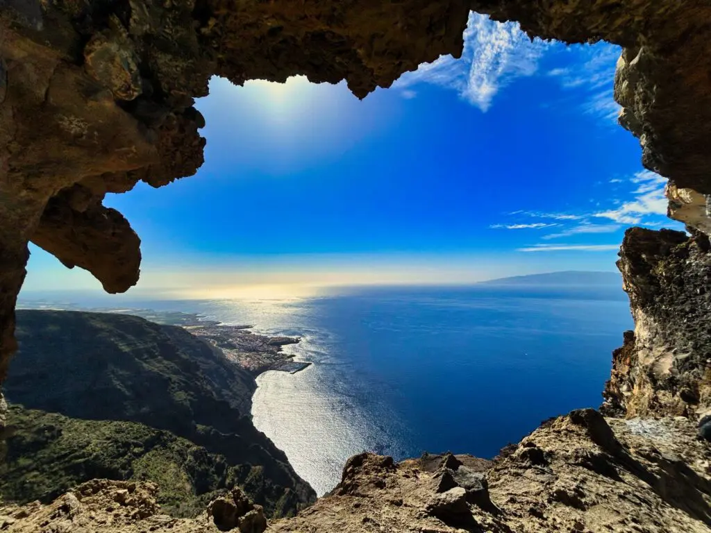
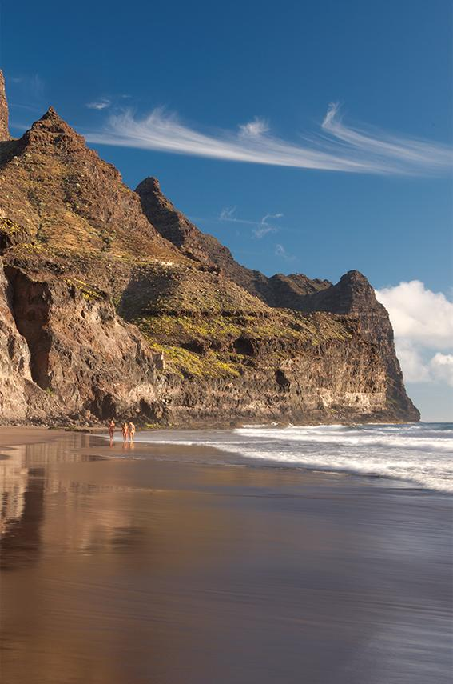
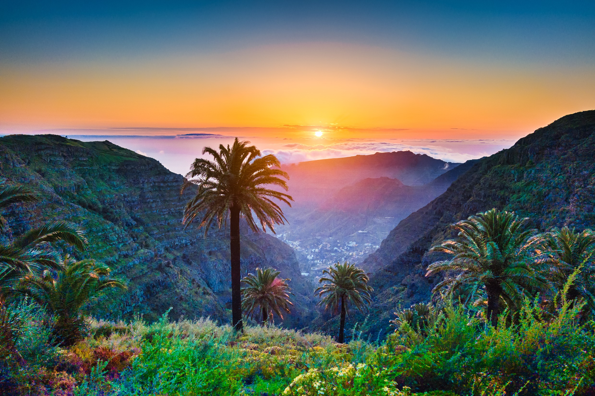

Witaj na Wyspach Kanaryjskich
Wyspy Kanaryjskie to miejsce pełne różnorodności - od piaszczystych plaż, przez wulkaniczne krajobrazy, aż po bujne lasy. Sprawdź, co każda z wysp ma do zaoferowania!

Teneryfa
Największa wyspa archipelagu, znana z wulkanu Teide i różnorodnych krajobrazów.
Dowiedz się więcej

Gran Canaria
Wyspa okrzyknięta kontynentem w miniaturze dzięki swojej różnorodności.
Dowiedz się więcej

La Palma
"La Isla Bonita" z bujnymi lasami i czystym niebem idealnym do obserwacji gwiazd.
Dowiedz się więcej